The Mail Application Type supports the following scenario:
This scenario supports quick decisions made by individuals based on a simple set of data using e-mail clients and no Workflow Execution Perspective or the like. E.g. with the following process model
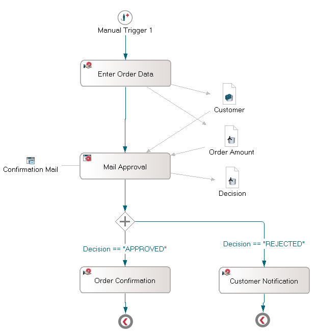
the following communication/decision flow
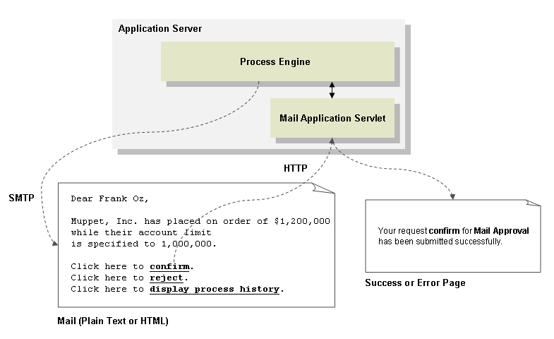
The mail is send by the Stardust Process Engine runtime via SMTP to the addressees specified as described below. The links in the mail will invoke servlets in the same Stardust Process Engine runtime environment. Note, that the servlets may be deployed on a different application server and on a different machine as long as they are accessing the same Stardust Audit Trail Database.
You can create a mail application by selecting the Mail Application option from the Application palette
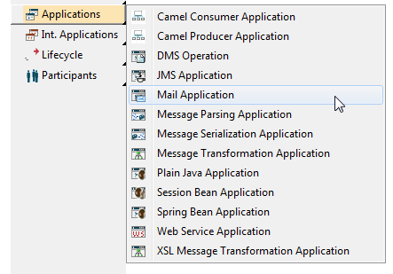
or by selecting the Mail Application option in the New Application submenu of the popup menu for the Applications tree node in the process model outline.
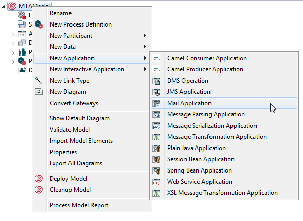
Details of the mail application can be specified by editing the Mail Application property page of the application property dialog:
The property page contains the following entries:
A couple of default parameters for the mail to be send can be specified in the Default Settings tab.
of the mail to be send.
Note, that semicolon-separated lists of mail addresses can be provided.
All default settings can be overwritten by providing appropriate data mappings (see below).
You have the option to determine if the subject line of the mail should be enhanced by process and activity OIDs as well as the activity name or not. In case the checkbox Subject Include Unique Identified is disabled, the subject of the mail will not be enhanced with additional information. If enabled, which is the default value, the subject of a mail will be extended, e.g:
7#14 test subject(Activity Application Activity 1)
Hereby the first number represents the process instance OID and the second number represents the activity instance OID. The name of the activity is appended in parentheses.
In case the checkbox value is not saved during modeling, the property Mail.SubjectEnhancedWithDetails in your carnot.properties file is used. If this property is set to false, the subject of the mail will not be enhanced with additional information. If set to true, which is the default value, the subject of a mail will be extended as described above. Please note that this property is deprecated.
To use a JNDI Session, enter the resource definition in the context.xml, residing in the META-INF folder of your Web application. Use the JNDI Session name as resource name, for example with JNDI Session set to mail/Session, enter:
<Resource name="mail/Session" type="javax.mail.Session" auth="Container" mail.smtp.host="localhost" mail.smtp.auth="false" mail.port="25" mail.transport.protocol="smtp" mail.debug="true"/>
In your web.xml file enter the following:
<resource-ref> <description>Resource reference to a factory for javax.mail.Session ...</description> <res-ref-name>mail/Session</res-ref-name> <res-type>javax.mail.Session</res-type> <res-auth>Container</res-auth> </resource-ref>
In case you use JNDI sessions in a RAD environment, you need to provide the server with the mail.jar. If this jar already exists in your RAD environment, move the existing jar, e.g. residing in folder <your workspace>/.metadata/.plugins/org.eclipse.wst.server.core/tmp0/wtpwebapps/worklist/WEB-INF/lib to the lib folder of your server location.
In the tab HTML Template the template for the HTML part is specified then. The HTML part to be send consists of a header (HTML Header text entry), a body (HTML Text Template text entry) and a footer part (HTML Footer text entry).
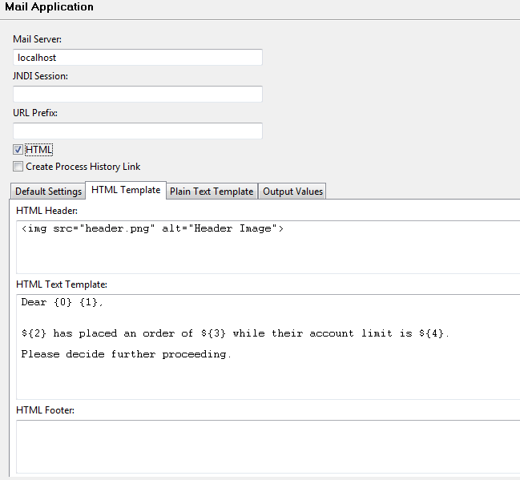
Template variables for all three entries can be set by using a number in curly braces, e.g.
Dear {0} {1},
{2} has placed an order of ${3} while their account limit is ${4}.
as in the java.text.. These variables will be available as input access points templateVariableN, - where N is the value in curly braces - for data mappings (see below).
The layout of the HTML mail will be
The Plain Text Template on the Plain Text Template tab works the same way as the HTML template and describes the content text/plain MIME type mail if the HTML checkbox is not checked. Template variables can be set the same way like in HTML templates.
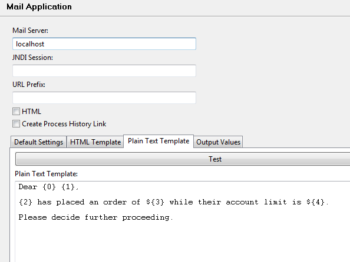
In the Output Values tab you will specify the possible response messages being listed as links between the body and the footer of the text and HTML mail content. The text of the link is specified in the Name column, the value being passed to the process continuation as the return value of the mail application is specified in the Value column.
You may select and change the <New Entry> cell to create a new output value pair and the TAB keys to navigate between columns.
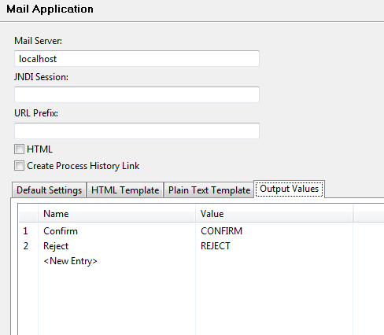
The return value - assuming an appropriate data mapping (see below) for the data Decision - can be evaluated as follows:
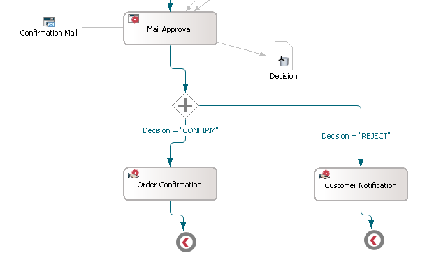
The Mail Application Type can be connected to an application activity. In Data Mappings to the activity can be used to pass data to the mail template, Out Data Mappings to return the value of the activated link in the mail.
Input access points for mail applications are
All access point are of type java.lang.String. For the access point mailPriority, the following string values are valid:
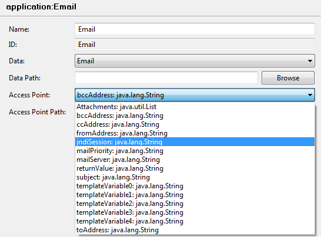
The only output access point returnValue is the result of the decision submitted by the e-mail recipient via clicking on the links provided in the sent e-mail (see above).
Data mappings can be specified for these access points.
Per default, SMTP authentication is disabled. If you like to enable SMTP authentication
set the property mail.smtp.auth in your server-side carnot.properties
file to true:
mail.smtp.auth = true
If authentication is enabled, the following other properties for authentication can also be set:
mail.smtp.port (default to 465) mail.smtp.user mail.smtp.password
The mail application has an additional in access point called Attachments of Type List. This access point accepts a list. Every org.eclipse.stardust.engine.api.runtime.Document in the list will be appended as an attachment to the email message.
An example of such a list is the data PROCESS_ATTACHMENTS.
Here is code example on how to create such a list:
List attachmentList = new ArrayList();
Document doc = (Document )DmsUtils.createDocumentInfo("abc.tif");
doc.setContentType("image/tiff");
doc.put("id", "abc");
attachmentList.add(doc);
The mail application type fetches the documents from the DocumentManagementService. The documents referenced in the attachment list must exist in the DMS under /docId (The docId should be provided in the Document object).
After submitting a decision request to the mail application servlet running in an arbitrary application server accessing the same Stardust Audit Trail Database as the one hosting the process engine submitting the mail, this servlet will respond with a success page, if the request has been successfully submitted and the process is continued - possibly with a submitted output value
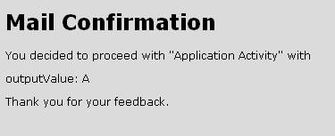
or an error page, if problems with the submission occurred (e.g. a decision had already been submitted for this process).
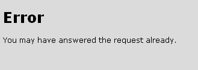
In order to fetch the information needed to create the success page or error page an user has to be configured in the web.xml. Default is the user motu with the password motu.
<servlet>
<servlet-name>MailConfirmationServlet</servlet-name>
<servlet-class>org.eclipse.stardust.engine.extensions.mail.web.servlet.MailApplicationReceptionServlet</servlet-class>
<init-param>
<param-name>user</param-name>
<param-value>motu</param-value>
</init-param>
<init-param>
<param-name>password</param-name>
<param-value>motu</param-value>
</init-param>
</servlet>
You may change these Web pages by modifying the param-values for
successPage and errorPage for the servlet MailConfirmationServlet
<servlet>
<servlet-name>MailConfirmationServlet</servlet-name>
<servlet-class>org.eclipse.stardust.engine.extensions.mail.web.servlet.MailApplicationReceptionServlet</servlet-class>
<init-param>
<param-name>successPage</param-name>
<param-value>http://localhost:8080/demo/successpage.jsp</param-value>
</init-param>
<init-param>
<param-name>errorPage</param-name>
<param-value>http://localhost:8080/demo/errorpage.jsp</param-value>
</init-param>
</servlet>
in the web.xml file.
These pages will be provided with the following request parameters:
for the success page and in addition
for the error page.
The following code shows a simple custom JSP for the success page using these variables:
<!doctype html public "-//w3c//dtd html 4.0 transitional//en">
<html>
<head>
<style type='text/css'>
<!--
body { background-color:#DBDBDB; font-weight:normal; font-family:Verdana; font-size:12px; }
-->
</style>
<title>Custom Mail Confirmation</title>
</head>
<body>
<img src='images/logo.jpg'/>
<h1>Mail Confirmation</h1>
<p>You decided to proceed with <b><%= request.getParameter("activity-name") %></b> with</p>
<p>outputValue: <b><%= request.getParameter("output-value") %></b></p>
<p>Thank you for your feedback.</p>
</body>
</html>